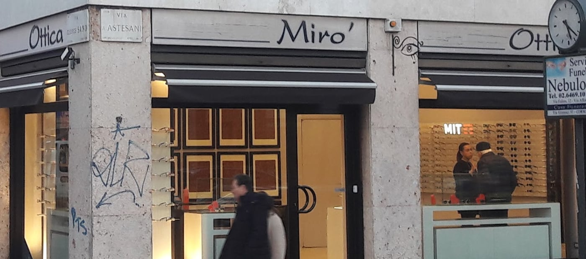

Ottica indipendente · Affori, Milano
Il quartiere,
finalmente a fuoco
Da Alessandro, all'angolo di Via Astesani: la visita della vista, le lenti giuste e le montature scelte una per una. Anche sulla montatura che hai già.

Muovi il cursore. È tutta qui la differenza.
Se per leggere un cartello stringi gli occhi, è ora di una visita: da Mirò si fa in negozio.
Cosa si fa qui
- 01
La visita della vista
Si controlla in negozio, con calma. Chi ci va racconta che è Alessandro stesso a proporla quando serve — e a dire quando non serve.
- 02
Le lenti progressive
Il pezzo più delicato: qui vengono citate spesso nelle recensioni, montate e spiegate senza fretta.
- 03
Lenti nuove, montatura tua
Gli occhiali a cui sei affezionato non si buttano: si cambiano le lenti e tornano come nuovi.
- 04
Montature e occhiali da sole
«Ampia scelta di modelli per tutti i gusti e tasche»: è una frase dei clienti, non nostra.
Quarantaquattro recensioni, media 4,9
«Alessandro è stato super gentile, paziente e competente.»
Recensione Google
«Negozio di ottica migliore della zona. Mi sono trovato benissimo: dovevo fare degli occhiali progressivi.»
sugar stefano · Local Guide
«Ottico super consigliato! Alessandro è fantastico, dà degli ottimi consigli.»
rui xu · Google
«Ampia scelta di modelli per tutti i gusti e tasche.»
Recensione Google
L'angolo di Via Astesani
Via Astesani 2, angolo Via George Sand
Affori, Milano · a due passi dalla M3 Affori Centro
Chiuso
- lunedìchiuso
- martedì09:30–13:00 · 15:30–19:30
- mercoledì09:30–13:00 · 15:30–19:30
- giovedì09:30–13:00 · 15:30–19:30
- venerdì09:30–13:00 · 15:30–19:30
- sabato09:30–13:00 · 15:30–19:30
- domenicachiuso
- Si fa la visita della vista?
- Sì, in negozio: nelle recensioni i clienti raccontano che è Alessandro a proporla quando serve.
- Posso tenere la mia montatura?
- Sì: si sostituiscono le lenti sugli occhiali che hai già.